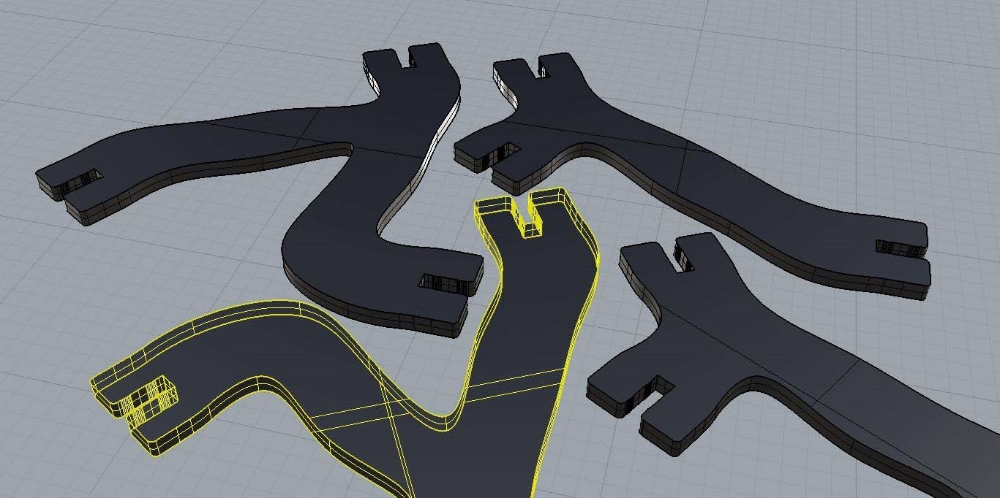

Turvangles
Let's connect

Turvangles are interlocking pieces that connect to create any sculpture you could imagine! Okay, maybe not any sculpture, but there are some 83 septillion different possibilities. Let's try a little math fun:
1. There are 16 unique Turvangle shapes with 3 connection points each (let's call them CP for short) 2. There are 6 ways to connect any shape to any CP (that's 3 CP of the connecting shape times 2 orientations) 3. There are 18 ways to add the second shape to the first (3 CP of the original shape times 6 ways to connect the new shape) 4. Adding a shape always adds 1 open CP to the sculpture (assuming each piece shares only one connection with any other piece) 5. This means there are always N+2 CP for the entire sculpture (a sculpture with 3 shapes would have 5 CP) 6. But we're not at three shapes yet! When the third shape is added, is has 4 possible CP to attach to from the current 2 shape sculpture 7. It also has 24 total ways to connect to the 2 shape sculpture (4 CP times 6 ways per CP) 8. But remember how there were 18 unique sculptures that could be created with just two shapes? 9. That means with three shapes, there are 24 times 18 unique sculptures - that's 432! 10. I'll spare you the rest of the math, but there are 83,619,443,946,597,434,523,648,000 (83 septillion) possible unique sculptures from 16 pieces.
Here's a bit of my brainstorming:

Here's a few of the final designs:
